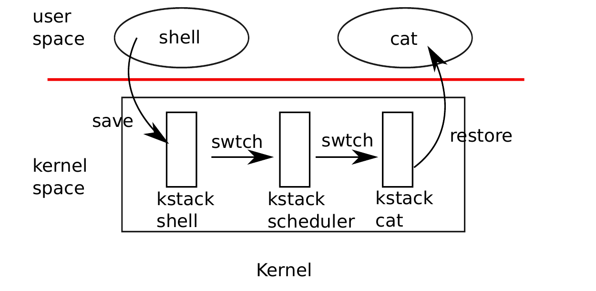
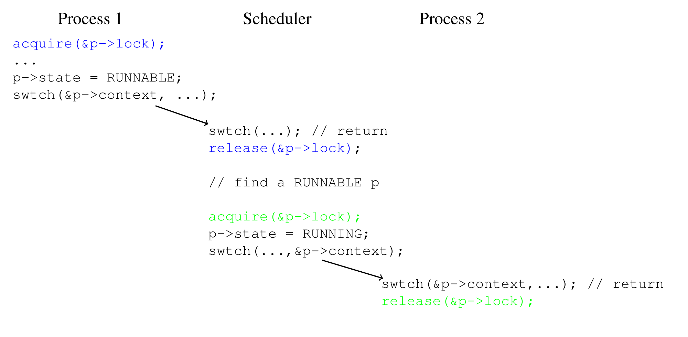

第 8 章 调度
任何操作系统运行的进程数都可能多于计算机拥有的 CPU 数，因此需要一个计划在进程之间时间共享 CPU。理想情况下，这种共享对用户进程是透明的。常见方法是把进程复用到底层硬件 CPU 上，让每个进程产生自己拥有一个虚拟 CPU 的错觉。本章解释 xv6 如何实现这种复用。
继续本章之前，请阅读 kernel/proc.h、kernel/swtch.S，以及 kernel/proc.c 中的 yield()、sched() 和 schedule()。
8.1 复用
xv6 在两种情况下通过把每个 CPU 从一个进程切换到另一个进程来实现复用。第一，当进程执行会阻塞（必须等待）的系统调用时，例如 read 或 wait，xv6 会切换。第二，xv6 周期性地强制切换，以处理长时间计算且不阻塞的进程。前者称为自愿切换，后者称为非自愿切换。
实现复用带来几个挑战。第一，如何从一个进程切换到另一个进程？基本思想是保存和恢复 CPU 寄存器，但这不能用 C 表达，所以有些棘手。第二，如何以对用户进程透明的方式强制切换？xv6 使用标准技术：硬件定时器中断驱动上下文切换。第三，所有 CPU 都在同一组进程之间切换，因此需要加锁方案，避免两个 CPU 同时决定运行同一进程等错误。第四，进程退出时必须释放其内存和其他资源，但它不能自己完成所有工作。第五，多核机器上的每个 CPU 必须记住自己正在执行哪个进程，以便系统调用影响正确的进程内核状态。
8.2 上下文切换概览
“上下文切换”指的是 CPU 停止执行一个内核线程（通常之后会恢复），并恢复执行另一个内核线程所涉及的步骤；这种切换是复用的核心。xv6 不直接从一个进程的内核线程上下文切换到另一个进程的内核线程；相反，内核线程通过上下文切换到该 CPU 的“调度器线程”来放弃 CPU，调度器线程选择另一个进程的内核线程运行，并上下文切换到该线程。

从更大范围看，从一个用户进程切换到另一个用户进程的步骤如图 8.1所示：旧进程的用户空间通过陷阱（系统调用或中断）进入它的内核线程；上下文切换到当前 CPU 的调度器线程；上下文切换到新进程的内核线程；最后陷阱返回到用户级进程。
8.3 代码：上下文切换
kernel/swtch.S 中的 swtch() 函数包含线程上下文切换的核心：它保存切出线程的 CPU 寄存器，并恢复切入线程先前保存的寄存器。这样就足够的基本原因是，线程状态由内存中的数据（例如栈）加上 CPU 寄存器组成；线程内存不需要保存和恢复，因为不同线程把数据保存在 RAM 的不同区域；但 CPU 只有一组寄存器，因此必须在线程之间切换（保存和恢复）。
每个线程的 struct proc 包含一个 struct context，保存该线程不运行时的寄存器。一个 CPU 的调度器线程的 struct context 位于该 CPU 的 struct cpu 中。当线程 X 希望切换到线程 Y 时，线程 X 调用 swtch(&X 的 context, &Y 的 context)。swtch() 把当前 CPU 寄存器保存到 X 的 context 中，然后把 Y 的 context 内容加载到 CPU 寄存器中，最后返回。
下面是 swtch 的简化副本：
swtch:
sd ra, 0(a0)
sd sp, 8(a0)
sd s0, 16(a0)
...
sd s11, 104(a0)
ld ra, 0(a1)
ld sp, 8(a1)
ld s0, 16(a1)
...
ld s11, 104(a1)
reta0 保存第一个函数参数，a1 保存第二个；这里二者都是 struct context 指针。16(a0) 指的是 a0 指向内存中偏移 16 字节的位置；参考 kernel/proc.h 中 struct context 的定义 (1951)，这是名为 s0 的结构字段。
swtch 的 ret 返回到哪里？它返回到 ra 寄存器指向的指令。在 X 调用 swtch() 切换到 Y 的例子中，执行 ret 时，ra 刚刚从 Y 的 struct context 加载出来。而 Y 的 struct context 中的 ra 最初是 Y 过去放弃 CPU 时调用 swtch 保存的。因此 ret 会返回到 Y 当时调用 swtch() 之后的指令；也就是说，X 对 swtch() 的调用像是从 Y 原先的 swtch() 调用返回一样。sp 也会是 Y 的栈指针，因为 swtch 从 Y 的 struct context 加载了 sp；因此返回后，Y 会在自己的栈上执行。swtch() 不需要直接保存或恢复程序计数器；保存和恢复 ra 就足够。
swtch (2902) 保存被调用者保存寄存器（ra、sp、s0..s11），但不保存调用者保存寄存器。RISC-V 调用约定要求，如果代码需要跨函数调用保存调用者保存寄存器的值，编译器必须在函数调用前生成指令把寄存器保存到栈上，并在函数返回时从栈恢复。因此 swtch 可以依赖调用它的函数已经保存了调用者保存寄存器（或者调用函数不需要这些寄存器中的值）。
8.4 代码：调度
上一节讨论了 swtch 内部；现在把 swtch 当作已知，考察从一个进程的内核线程通过调度器切换到另一个进程。调度器以每 CPU 一个特殊线程的形式存在，每个线程都运行 scheduler 函数。该函数负责选择接下来运行哪个进程。每个 CPU 都有自己的调度器线程，因为任意时刻可能有多个 CPU 在寻找可运行的东西。进程切换总是经过调度器线程，而不是直接从一个进程切换到另一个进程，以避免某些没有栈可供执行调度器的情况（例如旧进程已经退出，或者当前没有其他进程想运行）。
想要放弃 CPU 的进程必须获取自己的进程锁 p->lock，释放它持有的其他锁，更新自己的状态（p->state），然后调用 sched。你可以在 yield (2629)、sleep 和 kexit 中看到这个序列。sched 调用 swtch，把当前上下文保存到 p->context，并切换到 cpu->context 中的调度器上下文。swtch 在调度器栈上返回，就像调度器的 swtch 返回了一样 (2582)。

swtch() 的源或目标总是调度器线程，相关的 p->lock 总是被持有。scheduler (2558) 运行一个循环：寻找要运行的进程，swtch() 到它，最终它会 swtch() 回调度器，调度器继续循环。调度器遍历进程表寻找可运行进程，即 p->state == RUNNABLE 的进程。找到后，它设置每 CPU 当前进程变量 c->proc，把进程标为 RUNNING，然后调用 swtch 开始运行它 (2577-2582)。在过去某个时刻，目标进程必须已经调用过 swtch()；调度器对 swtch() 的调用实际上从那次早先调用返回。图 8.2展示了这个模式。
xv6 在调用 swtch 时保持 p->lock：swtch 的调用者获取锁，但锁在目标线程从 swtch 返回后释放。这种安排不寻常：更常见的是获取锁的线程也释放锁。xv6 的上下文切换打破这个惯例，是因为 p->state 和 p->context 必须原子地一起更新。例如，如果在调用 swtch 之前释放 p->lock，另一个 CPU 可能因为该进程状态是 RUNNABLE 而决定运行它。该 CPU 会调用 swtch 并从 p->context 恢复，而原 CPU 仍在保存到 p->context。结果是进程在另一个 CPU 上用部分保存的寄存器恢复，并且两个 CPU 使用同一个栈，造成混乱。一旦 yield 开始把运行中进程状态改为 RUNNABLE，p->lock 必须一直持有，直到进程保存完所有寄存器且调度器在自己的栈上运行。类似地，一旦调度器开始把一个 RUNNABLE 进程改为 RUNNING，就不能在该进程内核线程完全运行前释放锁。
有一种情况下，调度器对 swtch 的调用不会回到 sched。allocproc 会把新进程 context 中的 ra 寄存器设为 forkret (2653)，使它第一次 swtch “返回”到该函数开头。forkret 存在的目的是释放 p->lock，并设置返回用户空间所需的一些控制寄存器和 trapframe 字段。最后，forkret 模拟从系统调用返回用户空间的普通路径。
8.5 代码：mycpu 和 myproc
xv6 常常需要指向当前进程 proc 结构的指针。在单处理器上，可以有一个全局变量指向当前 proc。这在多核机器上行不通，因为每个 CPU 执行不同进程。解决方法是利用每个 CPU 都有自己的一组寄存器这一事实。
当某个 CPU 在内核中执行时，xv6 确保该 CPU 的 tp 寄存器总是保存 CPU 的 hartid。RISC-V 给 CPU 编号，为每个 CPU 提供唯一 hartid。mycpu (2178) 用 tp 索引 cpu 结构数组，并返回当前 CPU 的结构。struct cpu (1971) 保存当前在该 CPU 上运行进程的 proc 结构指针（如果有）、该 CPU 调度器线程的保存寄存器，以及用于管理中断禁用的嵌套自旋锁计数。
确保 CPU 的 tp 保存 hartid 有些复杂，因为用户代码可以自由修改 tp。start 在 CPU 启动序列早期、仍处于机器模式时设置 tp 寄存器 (1094)。准备返回用户空间时，prepare_return 把 tp 保存到 trampoline 页中，以防用户代码修改它。最后，uservec 在从用户空间进入内核时恢复保存的 tp (3127)。编译器保证在内核代码中从不修改 tp。如果 xv6 能在需要时向 RISC-V 硬件询问当前 hartid，会更方便；但 RISC-V 只允许在机器模式中这样做，不允许在监督者模式中这样做。
cpuid 和 mycpu 的返回值很脆弱：如果定时器中断导致线程让出 CPU，并稍后在另一个 CPU 上恢复执行，先前返回的值就不再正确。为避免这个问题，xv6 要求代码在调用 cpuid() 或 mycpu() 前禁用中断，并在使用完返回值后才启用中断。
函数 myproc (2187) 返回当前 CPU 上运行进程的 struct proc 指针。myproc 禁用中断，调用 mycpu，从 struct cpu 中取出当前进程指针（c->proc），然后启用中断。myproc 的返回值即使在启用中断后也安全可用：如果定时器中断把调用进程移动到另一个 CPU，它的 struct proc 指针仍然相同。
8.6 现实世界
xv6 调度器实现了一种简单调度策略：轮流运行每个进程。这种策略称为轮转（round robin）。真实操作系统实现更复杂的策略，例如允许进程有优先级。其思想是，相对于可运行的低优先级进程，调度器会偏好可运行的高优先级进程。这些策略可能变得复杂，因为目标之间常常互相竞争：例如操作系统可能还想保证公平性和高吞吐量。
8.7 练习
- 修改 xv6，使它从一个进程的内核线程切换到另一个进程的内核线程时只使用一次上下文切换，而不是通过调度器线程。让出 CPU 的线程需要自己选择下一个线程并调用
swtch。挑战包括：防止多个 CPU 意外执行同一线程；正确处理锁；以及避免死锁。